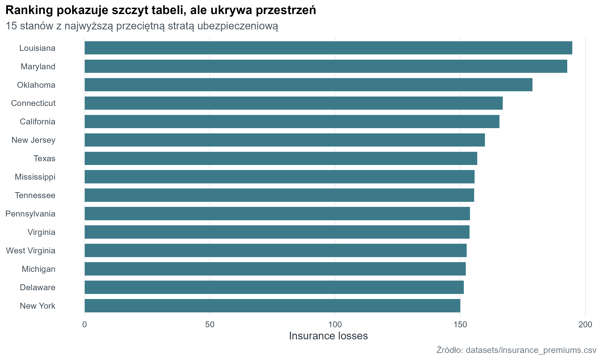
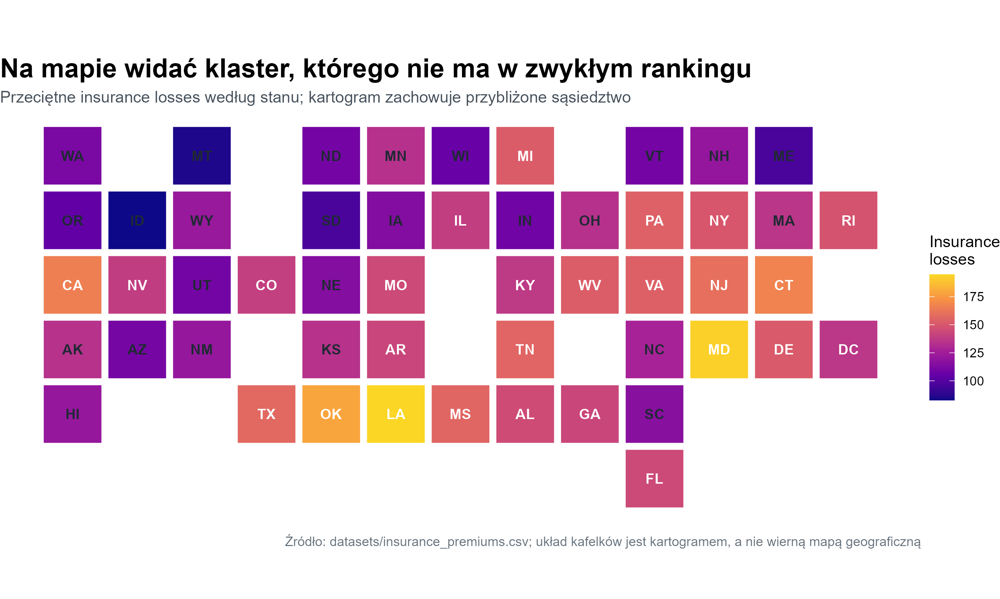

library(tidyverse)
library(here)
source(here("R", "theme_course.R"))
theme_set(theme_course())19 Detektywistyka danych
Mapa działa najlepiej wtedy, gdy przestrzeń jest częścią pytania. W tym repozytorium nie mamy współrzędnych ulic jak u Johna Snowa, ale mamy dane stanowe, więc możemy zbudować kartogram kafelkowy. To uproszczona mapa, która zachowuje sąsiedztwo i pozwala sprawdzić, czy problem układa się przestrzennie, a nie tylko rankingowo.
19.1 Przygotowanie danych
Skorzystamy z insurance_premiums.csv. Interesuje nas zmienna insurance_losses, czyli przeciętna strata ubezpieczeniowa. Najpierw dołączymy dwuliterowe skróty stanów, a potem ręcznie zbudujemy siatkę kafelków.
insurance <- readr::read_csv(
here("datasets", "insurance_premiums.csv"),
show_col_types = FALSE
) |>
mutate(
abb = case_when(
State == "District of Columbia" ~ "DC",
TRUE ~ state.abb[match(State, state.name)]
)
)
state_tiles <- tibble::tribble(
~State, ~x, ~y,
"Washington", 1, 1,
"Montana", 3, 1,
"North Dakota", 5, 1,
"Minnesota", 6, 1,
"Wisconsin", 7, 1,
"Michigan", 8, 1,
"Vermont", 10, 1,
"New Hampshire", 11, 1,
"Maine", 12, 1,
"Oregon", 1, 2,
"Idaho", 2, 2,
"Wyoming", 3, 2,
"South Dakota", 5, 2,
"Iowa", 6, 2,
"Illinois", 7, 2,
"Indiana", 8, 2,
"Ohio", 9, 2,
"Pennsylvania", 10, 2,
"New York", 11, 2,
"Massachusetts", 12, 2,
"Rhode Island", 13, 2,
"California", 1, 3,
"Nevada", 2, 3,
"Utah", 3, 3,
"Colorado", 4, 3,
"Nebraska", 5, 3,
"Missouri", 6, 3,
"Kentucky", 8, 3,
"West Virginia", 9, 3,
"Virginia", 10, 3,
"New Jersey", 11, 3,
"Connecticut", 12, 3,
"Alaska", 1, 4,
"Arizona", 2, 4,
"New Mexico", 3, 4,
"Kansas", 5, 4,
"Arkansas", 6, 4,
"Tennessee", 8, 4,
"North Carolina", 10, 4,
"Maryland", 11, 4,
"Delaware", 12, 4,
"District of Columbia", 13, 4,
"Hawaii", 1, 5,
"Texas", 4, 5,
"Oklahoma", 5, 5,
"Louisiana", 6, 5,
"Mississippi", 7, 5,
"Alabama", 8, 5,
"Georgia", 9, 5,
"South Carolina", 10, 5,
"Florida", 10, 6
) |>
left_join(insurance, by = "State") |>
mutate(
label_colour = if_else(insurance_losses >= median(insurance_losses), "white", "#1f2933")
)19.2 Ranking mówi kto, ale nie mówi gdzie
Na zwykłym rankingu łatwo wskazać ekstremalne stany, ale trudno zauważyć, czy wysokie wartości tworzą większy pas albo klaster.
insurance |>
slice_max(insurance_losses, n = 15) |>
mutate(State = forcats::fct_reorder(State, insurance_losses)) |>
ggplot(aes(x = insurance_losses, y = State)) +
geom_col(fill = "#3C7A89", width = 0.72) +
labs(
title = "Ranking pokazuje szczyt tabeli, ale ukrywa przestrzeń",
subtitle = "15 stanów z najwyższą przeciętną stratą ubezpieczeniową",
x = "Insurance losses",
y = NULL,
caption = "Źródło: datasets/insurance_premiums.csv"
) +
theme(
panel.grid.major.y = element_blank()
)
19.3 Kartogram: kiedy przestrzeń przywraca kontekst
Po odtworzeniu sąsiedztwa widać coś, czego ranking nie pokazuje: wyższe wartości częściej grupują się w południowej i wschodniej części kraju. To jeszcze nie jest dowód przyczynowy, ale jest bardzo dobrą hipotezą do dalszego sprawdzenia.
ggplot(state_tiles, aes(x = x, y = y, fill = insurance_losses)) +
geom_tile(color = "white", linewidth = 1.2, width = 0.95, height = 0.95) +
geom_text(aes(label = abb, color = label_colour), size = 3.5, fontface = "bold") +
scale_fill_viridis_c(
option = "C",
end = 0.92,
labels = scales::label_number(accuracy = 1)
) +
scale_color_identity() +
scale_y_reverse() +
coord_equal() +
labs(
title = "Na mapie widać klaster, którego nie ma w zwykłym rankingu",
subtitle = "Przeciętne insurance losses według stanu; kartogram zachowuje przybliżone sąsiedztwo",
x = NULL,
y = NULL,
fill = "Insurance\nlosses",
caption = "Źródło: datasets/insurance_premiums.csv; układ kafelków jest kartogramem, a nie wierną mapą geograficzną"
) +
theme_void() +
theme(
legend.position = "right",
plot.title = element_text(face = "bold", size = 18),
plot.subtitle = element_text(color = "#46515c", size = 11),
plot.caption = element_text(color = "#68737d", size = 9)
)
19.4 Wnioski i interpretacja
Dobra mapa nie jest dekoracją raportu. To narzędzie do zadawania lepszych pytań: czy za tym klastrem stoją regulacje, urbanizacja, ryzyko drogowe, a może struktura polis? Bez przestrzeni to pytanie nawet się nie pojawia.
19.5 Zadanie
Zbuduj podobny kartogram dla fatal_collisions albo premiums i sprawdź, czy układ przestrzenny opowiada tę samą historię co insurance_losses.